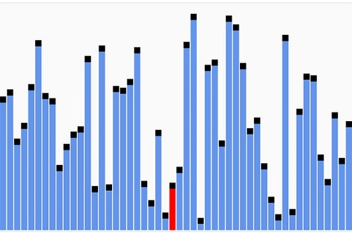

Quicksort

Visualization
Characteristics
- Developed by British computer scientist Tony Hoare in 1959 and published in 1961.
- It partitions the input array to two sub-arrays, then sorts each subarray recursively.
- When implemented well, it can be about two or three times faster than its main competitors, merge sort and heapsort.
- In efficient implementations it is not a stable sort.
- It is a divide and conquer algorithm.
- Can operate in-place on an array, requiring small additional amounts of memory to perform the sorting.
- Gained widespread adoption, appearing, for example, in Unix as the default library sort subroutine. Hence, it lent its name to the C standard library subroutine qsort and in the reference implementation of Java.
- The pivot selection and partitioning steps can be done in several different ways, the choice of specific implementation schemes greatly affects the algorithm's performance.
- On average, quicksort performs only about 39% worse than in its best case. In this sense, it is closer to the best case than the worst case. This fast average runtime is another reason for quicksort's practical dominance over other sorting algorithms.
Time and space complexity
- Worst case: O(n^2) - this behavior is rare
- Average case: O(n log(n))
- Best case - Simple partition: O(n log(n))
- Best case - Three-way partition and equal keys: O(n)
- Worst case space - Auxiliary (naive): O(n)
- Worst case space - Auxiliary (Sedgewick 1978): O(log(n))
“There are two ways of constructing a software design: One way is to make it so simple that there are obviously no deficiencies, and the other way is to make it so complicated that there are no obvious deficiencies. The first method is far more difficult.” - Tony Hoare
More information on Wikipedia
Image source: Simpsons contributor on Wikimedia Commons